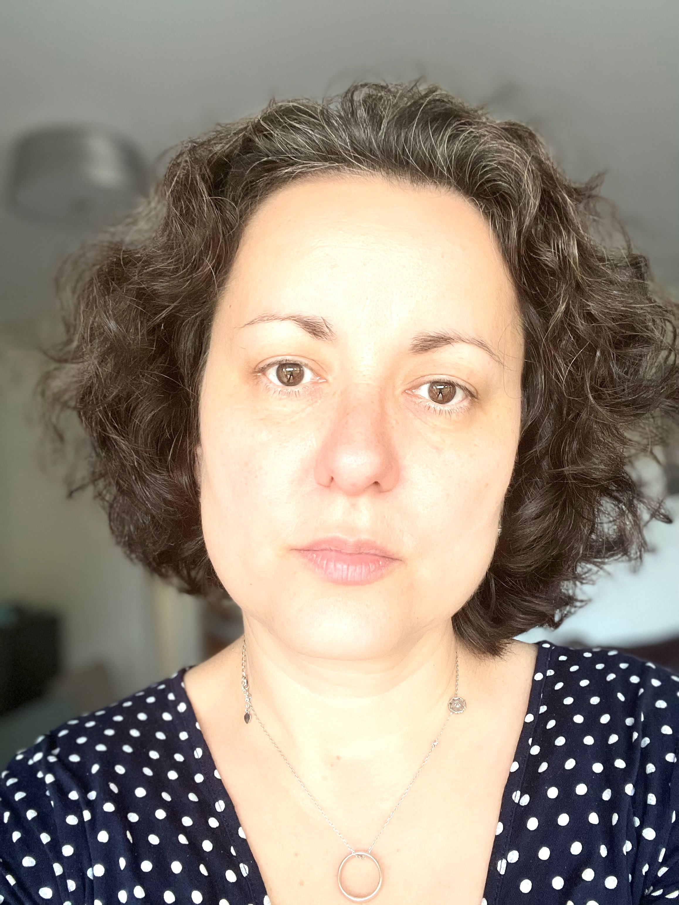

Scientific Committee#01

Victorita Dolean Maini
Professor
View profile
Profile / 01WINDSMATH
Victorita Dolean Maini
- Role
- Scientific Committee
- Position
- Professor
- Institution
- Eindhoven University of Technology
Back
In alphabetical order by surname
Scientific Committee#01

Professor
View profile
Profile / 01WINDSMATH
Victorita Dolean Maini
Back
Scientific Committee#02
Professor
View profile
Profile / 02WINDSMATH
Huazhen Lin
Back
Scientific Committee#03
Wallis Professor Emeritus & Professor
View profile
Profile / 03WINDSMATH
Terry Lyons
Back
Scientific Committee#04
Professor
View profile
Profile / 04WINDSMATH
Zhiming Ma
Back
Organiser#01
UCL, UK
View profile
Profile / 01WINDSMATH
Hao Ni
Back
Organiser#02
CAS, China
View profile
Profile / 02WINDSMATH
Wei Chen
Back
Organiser#03
UVienna, Austria
View profile
Profile / 03WINDSMATH
Christa Cuchiero
Back
Organiser#04
Microsoft, China
View profile
Profile / 04WINDSMATH
Qi Meng
Back
Organiser#05
Columbia, USA
View profile
Profile / 05WINDSMATH
Jing Dong
Back
Organiser#06
Strathclyde, UK
View profile
Profile / 06WINDSMATH
Yue Wu
Back